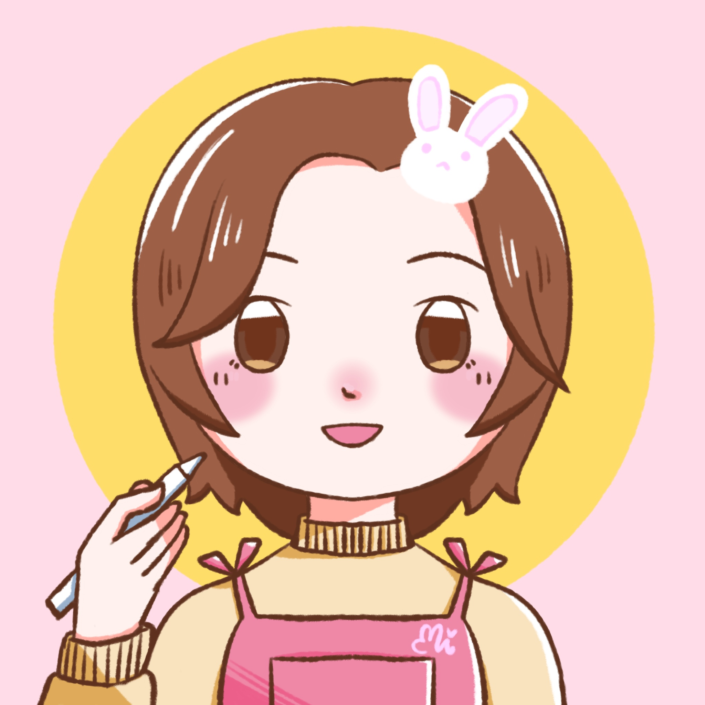
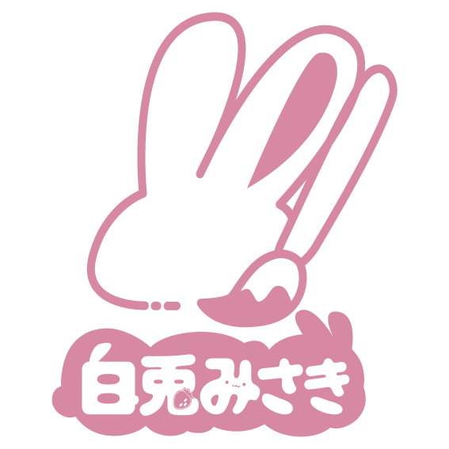
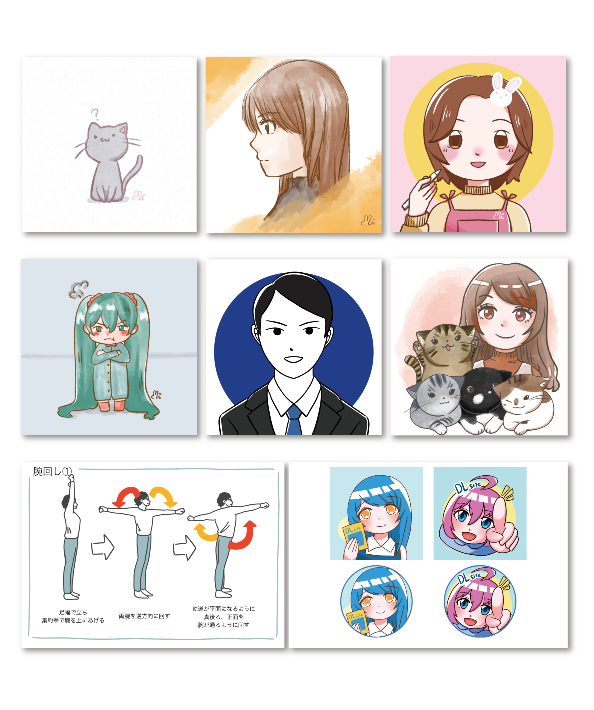
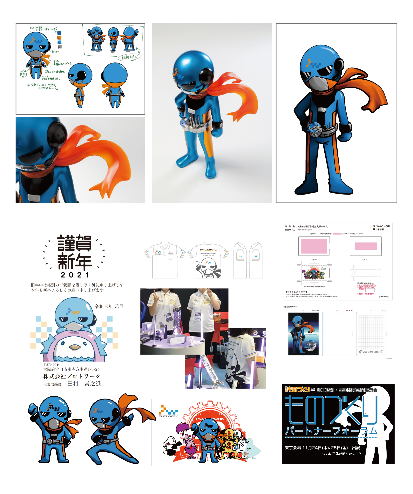
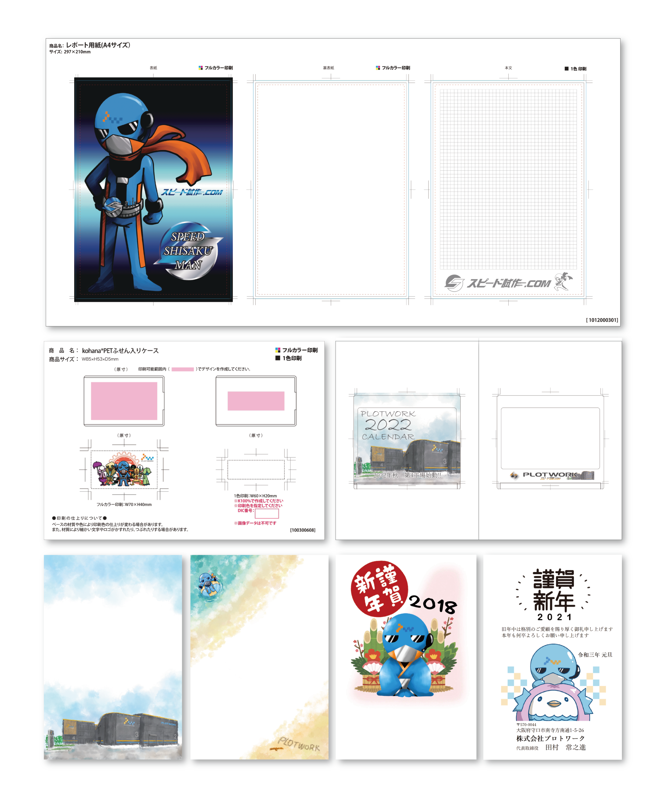
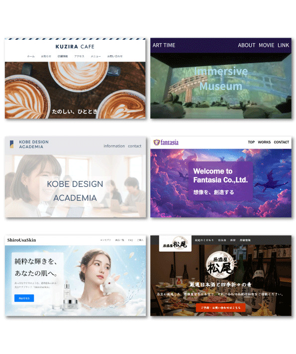

WELCOME TO
MY PORTFOLIO
Profile
デザイナー/イラストレーター



shirousagi misaki
白兎みさき
思い描いたものが、どんどん形になっていく瞬間がいちばん楽しいです。
イラストやデザイン、立体造形など、どんな表現でも「つくる」ことに夢中になれます。
学生時代はアナログ画材からデジタル、立体まで幅広く学び
卒業後はモノづくりの会社でモデリングや加工にも携わりました。
手を動かして形にする経験を通して、見た目だけでなく構造や使いやすさも考えるようになりました。
Webデザインを学ぶ中では、HTMLやCSSを使ってイメージをそのまま再現できる楽しさを知り
イラスト制作では、見る人の気持ちが少し明るくなるような温かい表現を心がけています。
これからも、発想を形にする喜びを大切に、
人の心に残るデザインを届けていきたいです。





Contact
お問い合わせはこちらから
Email: sirousagi622@gmail.com